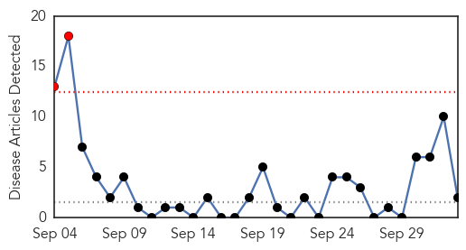
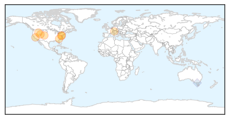

MERS
30-Day Web Trend
2 alerts, 0 warnings

30-Day Twitter Trend
5 alerts, 0 warnings

Article Locations
Article Confidences
Top Articles:
Top Tweets:
- 0.907
- RT: WHO states that MERS-CoV is not an emergency, but has risk of spread to Ebola-stricken W. Africa. - http://t.co/et4nB48RjM
Influenza
30-Day Web Trend
16 alerts, 10 warnings

30-Day Twitter Trend
0 alerts, 0 warnings

Article Locations
Article Confidences

Top Articles:
- 0.999
- We fear Ebola, but should fear Influenza
- 0.949
- Flu vaccinations begin at Salt Lake County Health Department -
- 0.944
- 6 things all parents should know about enterovirus D68
- 0.920
- California enterovirus-D68 cases jump to 14, including one in Solano County
- 0.899
- FLU SHOT CLINIC SCHEDULED FOR MONROE HIGH SCHOOL
- 0.866
- South Carolina National Guard looks ahead to flu season
- 0.864
- Neuraminidase inhibitors for influenza complications–Authors' reply
- 0.850
- Flu clinics to open in Calgary on Oct. 20
- 0.834
- Health Hub: Adult immunisations still pose a challenge
- 0.779
- Time to be inoculated against the flu is now
Top Tweets:
- 0.740
- Flu Fact Friday: Influenza (more commonly known as ‘the flu’) is different to the common cold. http://t.co/LGPZgXLH0a